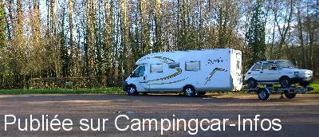
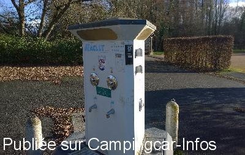
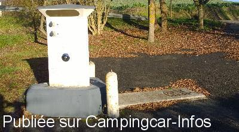
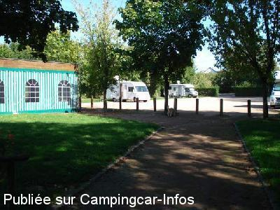
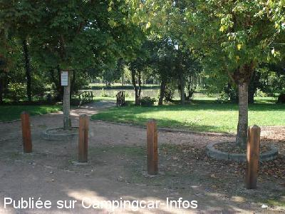
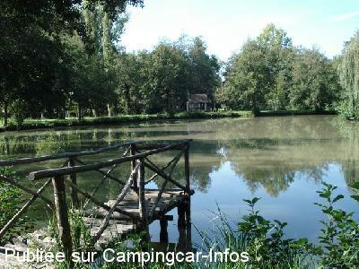

ASN = Aire de services avec stationnement nuit possible de :
BARLIEU
(N° 462)
Accès/adresse :
Base de loisirs
18260 BARLIEU
18260 BARLIEU
Latitude : (Nord) 47.47917° Décimaux ou 47° 28′ 45′′
Longitude : (Est) 2.6313° Décimaux ou 2° 37′ 52′′
Tarif : 2016
Stationnement : 3,50 €
Électricité : 2,50 €
Un agent passe encaisser.
Type de borne : EURO-RELAIS
Services :


Petit commerce
Autres informations :
Ouverte toute l'année
10 emplacements
Tel + 33 (0)248 737 212

Le 26/01/2016 par cricrik57

Le 26/01/2016 par cricrik57

Le 26/01/2016 par cricrik57

Le 11/10/2011 par mataf 59

Le 11/10/2011 par mataf 59

Le 11/10/2011 par mataf 59
de
CRICRIK57
le 26/01/2016 :
Aire superbe et très tranquille, pouvant accueillir une vingtaine de camping cars, même de grandes tailles, avec plan d'eau et borne pour les services eau et électricité 2 prises, ainsi que vidange eaux noires et eaux grises. Coût des services et du stationnement, est à régler aux bénévoles qui gèrent l'aire.
Aire superbe et très tranquille, pouvant accueillir une vingtaine de camping cars, même de grandes tailles, avec plan d'eau et borne pour les services eau et électricité 2 prises, ainsi que vidange eaux noires et eaux grises. Coût des services et du stationnement, est à régler aux bénévoles qui gèrent l'aire.
de
Nono88
le 22/05/2014 :
§ De passage le 16/05/2014
Avons passé une nuit calme, endroit charmant près d'un etang,3.50 € la nuit mais personne n'est passé pour encaisser, nous etions seul sur l'aire de service.
A recommander
§ De passage le 16/05/2014
Avons passé une nuit calme, endroit charmant près d'un etang,3.50 € la nuit mais personne n'est passé pour encaisser, nous etions seul sur l'aire de service.
A recommander
de
pivoine
le 29/09/2013 :
De passage le 22 septembre. Accueil sympathique. Tarif pour le stationnement 3,50€ + 2,50€ pour l'électricité, mais peu de branchements possibles. Services gratuits.
Avons passé une nuit très calme.
De passage le 22 septembre. Accueil sympathique. Tarif pour le stationnement 3,50€ + 2,50€ pour l'électricité, mais peu de branchements possibles. Services gratuits.
Avons passé une nuit très calme.
de
CHRISTINE
le 18/07/2013 :
Bonjour,
De passage en juillet 2013, aire agréable et calme. Services gratuits
Petit étang agréable, l'aire peut servir de parking aux voitures.
Le boulanger passe, mais un peu tard :-)
Bonjour,
De passage en juillet 2013, aire agréable et calme. Services gratuits
Petit étang agréable, l'aire peut servir de parking aux voitures.
Le boulanger passe, mais un peu tard :-)
de
fred25
le 14/05/2013 :
De passage le 10/04, même commentaires. Aires super sympa. Un barbecue à disposition .Jeux pour enfant, étang pour pêcheurs. Rien à redire
De passage le 10/04, même commentaires. Aires super sympa. Un barbecue à disposition .Jeux pour enfant, étang pour pêcheurs. Rien à redire
de
mataf 59
le 11/10/2011 :
De passage en septembre: Arrêt super sympa, où l'on nous averti que les pelouses sont à notre disposition pour stationner (je n'ai jamais vu cela en 15 ans de C Car )
Grand parking plat si on ne veut pas se mettre sur herbe. jeu pour enfants, étang de pêche et rivière, le boulanger passe le matin et le centre du bourg et à 1/4h à pied.
Du bonheur !
Merci à la commune
De passage en septembre: Arrêt super sympa, où l'on nous averti que les pelouses sont à notre disposition pour stationner (je n'ai jamais vu cela en 15 ans de C Car )
Grand parking plat si on ne veut pas se mettre sur herbe. jeu pour enfants, étang de pêche et rivière, le boulanger passe le matin et le centre du bourg et à 1/4h à pied.
Du bonheur !
Merci à la commune
de
Ralph
le 25/10/2010 :
Stayed one quiet night mid October 2010 when there was only one other CC on site. This looks like it was once a very nice place but is now very dilapidated. Pity. The waste / water is very difficult to access (my van is 7m) 2 Electric sockets available. Long lead required.
Stayed one quiet night mid October 2010 when there was only one other CC on site. This looks like it was once a very nice place but is now very dilapidated. Pity. The waste / water is very difficult to access (my van is 7m) 2 Electric sockets available. Long lead required.
de
berlu joel
le 15/03/2010 :
Je suis passé ce week-end et la borne n'était pas en service. D'après le responsable, ce sera OK à partir du mois d'avril, mais le site reste tout de même très sympa. Electrag.
Je suis passé ce week-end et la borne n'était pas en service. D'après le responsable, ce sera OK à partir du mois d'avril, mais le site reste tout de même très sympa. Electrag.
de
Jean Marc Nondier
le 19/04/2009 :
Nouveaux tarifs : 3,50 € la première nuit, 2,50 € la deuxième et 1,50 € les suivantes. Une personne passe ##### pour encaisser. Coordonnées GPS inexactes (j'ai oublié de relever les bonnes). Endroit toujours aussi agréable.
Nouveaux tarifs : 3,50 € la première nuit, 2,50 € la deuxième et 1,50 € les suivantes. Une personne passe ##### pour encaisser. Coordonnées GPS inexactes (j'ai oublié de relever les bonnes). Endroit toujours aussi agréable.
de
le 10/09/2006 :
De passage 1 nuit en juillet, évitez d'arriver trop tôt l'après-midi en raison de la base de loisirs (stationnement difficile), mais le soir, calme assuré et les enfants profitent pleinement de l'espace de jeux. Remerciements à cette commune!
De passage 1 nuit en juillet, évitez d'arriver trop tôt l'après-midi en raison de la base de loisirs (stationnement difficile), mais le soir, calme assuré et les enfants profitent pleinement de l'espace de jeux. Remerciements à cette commune!
de
jean michel vallet
le 02/09/2006 :
Agréable séjour de 3 jours avant le retour à la maison. C'est devenu une étape habituelle tant cette aire est belle, propre et bien aménagée. A l'année prochaine ...
Agréable séjour de 3 jours avant le retour à la maison. C'est devenu une étape habituelle tant cette aire est belle, propre et bien aménagée. A l'année prochaine ...
de
le 18/05/2006 :
Il faut savoir que les services sont gratuits pour ceux qui passent.
Il faut savoir que les services sont gratuits pour ceux qui passent.